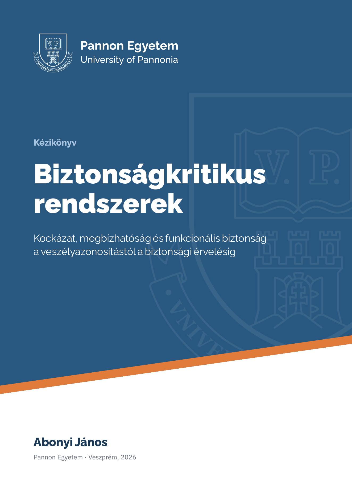
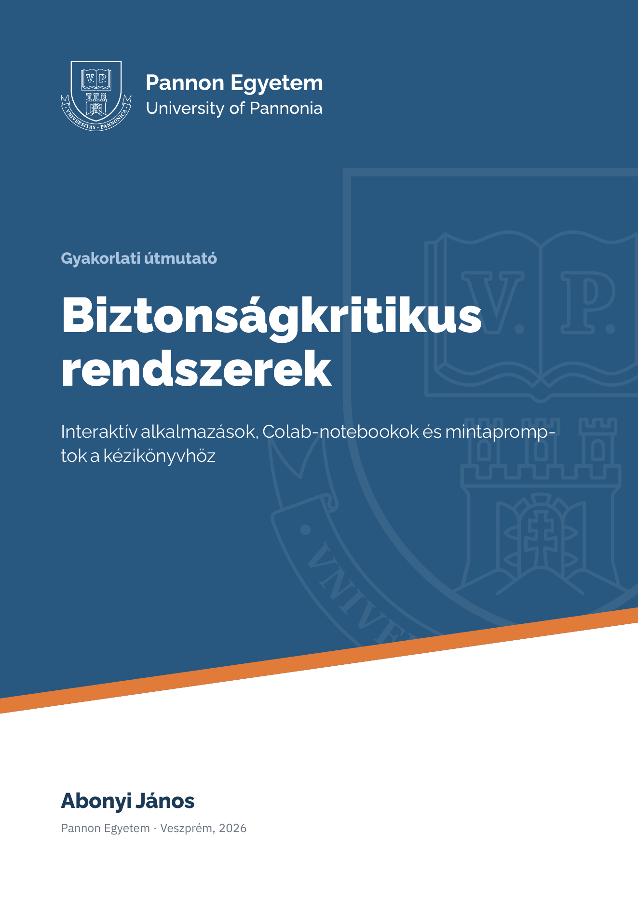

A kézikönyv a biztonságkritikus rendszerek tervezésének és igazolásának teljes ívét tárgyalja: a balesetmodellektől és a kockázatértékeléstől a HAZOP-, FMEA- és STPA-elemzésen, a hibafákon, a Markov-modelleken és a SIL-igazoláson át a biztonságos architektúrákig, a szoftver és az ember szerepéig, a biztonsági érvelésig, valamint a gépi tanulás és a kiberbiztonság új kérdéseiig. A módszereket három, a könyvön végigvezetett esettanulmány kapcsolja össze: egy vegyipari reaktor védelme, egy gépjármű vészfékező rendszere és egy kollaboratív robotcella. A gyakorlati útmutató böngészőben futó alkalmazásokkal, Colab-notebookokkal és mintapromptokkal teszi kipróbálhatóvá a módszereket.

Kézikönyv
Tizennyolc fejezet és négy függelék: elmélet, kidolgozott esetek, módszer-összefoglalók, önellenőrző feladatok megoldással, szószedet és szabványjegyzék.

Gyakorlati útmutató
Tizenkét gyakorlat: kilenc böngészős alkalmazás, hét Google Colab-notebook, mintapromptok a nagy nyelvi modellek felelős használatához és egy projektfeladat.
A kézikönyv részei
- Alapok: balesetek és balesetmodellek, fogalmak, kockázatértékelés, a biztonsági életciklus
- Veszélyazonosítás: HAZOP, FMEA és FMEDA, STAMP és STPA
- Kvantitatív megbízhatóság és biztonság: élettartam-adatok, blokkdiagramok, hibafa, eseményfa és LOPA, Markov-modellek, PFD, PFH és SIL
- Tervezés biztonságra: architektúrák, szoftver, emberi tényezők
- Bizonyítás és új kihívások: biztonsági érvelés, SOTIF, gépi tanulás, kiberbiztonság, szabályozás
Az alkalmazások közvetlenül
- Kockázati mátrix tervező
- FMEA-munkalap
- STPA-munkalap
- Élettartam-eloszlások
- Megbízhatósági blokkdiagram
- Hibafa-elemző
- LOPA és eseményfa
- Markov-modell szerkesztő
- PFD- és SIL-kalkulátor
Hivatkozás
Abonyi János (2026): Biztonságkritikus rendszerek. Kockázat, megbízhatóság és funkcionális biztonság a veszélyazonosítástól a biztonsági érvelésig. Pannon Egyetem, Veszprém. DOI: 10.5281/zenodo.24413011
A kiadások archivált változata a Zenodón, a kiadási jegyzetek a GitHub-tárolóban érhetők el.
A forrásszöveg, az ábrák, az alkalmazások és a notebookok a GitHub-tárolóban találhatók. Hibát vagy javaslatot ott, az „Issues” felületen lehet bejelenteni.